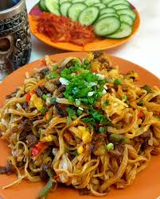

Home
Tsuiwan

Ingredients
- meat(could be beef, sheep, goat, horse)
- vegetables(potato, carrot, onion)
- flour
- vegetable or meat oil
Steps
- chop meat and potato middle sized cube
- chop carrot and onion thin narrow
- make dough with water and let it rest a little
- divide dough to little parts that you can roll out
- oil those flattened dough and put them together up vertically
- slice them to little pieces like fried rice but thinner
- heat up oil and put onion
- after it got brownish put meat in
- after the meat got brownish put vegetables
- fry little bit and put water in
- put slices dough on top of it but leave a circle without dough so steam can go up and cook it from the top
- wait until dough is cooked
- take out some soup it there is and mix everything together